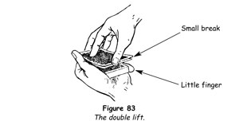
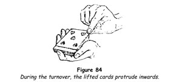
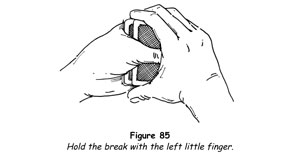

When used in moderation and properly done this sleight is one of the most useful and deceptive of modern card sleights. Unfortunately many conjurors do it badly and far too often. We would caution the student first to learn to execute the sleight perfectly and then to use it sparingly and discreetly.
As the name implies, the sleight consists of lifting two cards as one, turning them over on the deck and then turning them face downwards again.
1. Hold the deck face downwards in the left hand, practically in the position for dealing but with the left thumb extended against the left side. With the right hand square the ends, and at the same time wedge the pack slightly by pressing back with the tips of the last three fingers on the outer edge, the tip of the index finger resting on the back near the outer end.
2. With the tip of the right thumb lift the inner end of the top card and then the inner end of the second card about 6 mm (¼ in) (figure 83). The wedging of the pack enables you to do this with ease and certainty. Press the tip of the left little finger against the side of the second card to hold the break thus made. Do not insert the tip of the finger into the break.

3. Make another squaring motion with the right hand and then remove it to make some gesture appropriate to your patter.
4. To lift the two cards as one, turn your right-hand palm upwards and seize the inner right corners between the tips of the thumb above and the index and middle fingers below. Turn the hand over to the left and lay the two cards face upwards on the deck so that the lower ends protrude inwards about 12 mm (½ in) (figure 84). Move the right hand away towards the right, running the tip of the thumb along the ends of the two cards. This is done to make certain that the ends of the two cards will be perfectly aligned. The pressure of the left fingers on the cards, forcing them against the ball of the thumb, will ensure the sides are flush.

5. The second card having thus been shown, turn the two cards face downwards again. With the right hand palm upwards, seize the index corner, turn the two cards face down and lay them flush on the pack.
Done properly, the sleight is a very easy one. The two cards must be made ready and the hands separated before the lift and turnover is made. Too often the move is made immediately after fumbling in getting the two cards separated at the inner ends. To attain an easy and natural action in performing the sleight, first turn a single card in the manner described, and then turn two cards as one, copying the action closely.
Double Lift Glimpse
The double lift affords a subtle method of glimpsing a chosen card when it is on the top of the pack. Ostensibly, to show that the card is not at the top, make a double lift, showing the second card and naming it. Replace the two cards, then show the bottom card and call its name. Turn the pack face downwards and lift the top card, holding it so that only you can see its face, and again name the second card. Note what it really is and replace it. Miscalling a card can often be used to good advantage.
Double Lift Card Reverses
One of the most effective climaxes for a quick trick is that in which a chosen card is found face upwards when the deck is spread face downwards on the table. The following methods of secretly reversing a card make use of the double lift.
Top Card Reversal
In this method the top card is found to be reversed in the centre of the pack.
1. Hold the pack face downwards in the left hand, as for dealing, with the chosen card at the top.
2. Double lift the two cards at the top and turn them over as one card, placing them face upwards on the pack. Square the pack and call attention to the card face upwards at the top.
3. Turn the left hand palm downwards, thus turning the pack face upwards. Shift the grip of the left hand, so that it holds the pack as for the glide. Tap the face card and call attention to it.
4. Draw off the top card, now the lowermost card, which was originally second from the top. It will be face downwards. Turn it face upwards, mention its name again as if refreshing your memory, and thrust it into the centre of the pack.
5. Make a single complete cut with the face-up pack and the chosen card is reversed at the centre.
Note that the chosen card may be glimpsed by tilting the pack a little towards yourself in making the cut.
In this and the next two methods, cards with a white border should be used.
Second Card Reversal: First Method
In this method the chosen card is second from the top.
1. Hold the pack face downwards in the left hand, as for dealing. Turn the top card face upwards and square it on the deck. As you do this, secretly push the second card a little off the pack to the right, and slip the tip of the left little finger under it. Call attention to the card face upwards at the top.
2. Grasp the two cards at the ends, near the right corners, between the right thumb and middle finger. The break under the two cards held by the little finger makes this easy. Slide them to the right as one card, until their left side rests on the left fingertips.
3. Drop the left thumb under the pack and flip this over to the right so that it falls face upwards upon the two cards held by the right hand. Call attention to the card that is at the face of the pack.
4. Square the pack and make one complete cut, placing the chosen card at the centre in the reversed position.
Second Card Reversal: Second Method
The chosen card is second from the top.
1. Hold the pack face downwards in the left hand, as for dealing. Turn the top card face upwards and square it on the deck, at the same time secretly pushing the second card to the right with the left thumb and slipping the left little fingertip under it.
2. Grasp the two cards above the little fingertip at the ends, near the right corners, between the right thumb and middle finger. Slide them to the right so that their left edges rest on the left fingertips.
3. Push the third card, which is face downwards, off the pack with the left thumb. Flip it face upwards on the pack with the two cards held by the right hand. Calling attention to it, push it off the pack with the left thumb and take it squarely under the two held in the right hand. This hand now holds three cards, the middle of which is face downwards, although the audiences believes that only two cards are held.
4. Replace the cards on the pack, flipping them face downwards. The chosen card is face upwards below the top card. Make one complete cut to carry it to the centre of the pack.
This method differs from the others mainly in that the pack is not turned over.
TRICKS WITH THE DOUBLE LIFT
Rapid Transit
Two cards taken at random, one held by a spectator and the other by the magician, change places instantly. Any deck can be used and there are no duplicates.
1. Have a spectator shuffle the deck to his own satisfaction.
2. Take the cards, square them, and under cover of that action prepare for the double lift by raising the inner right corners of the two cards at the top of the pack and holding the break with the left little finger.
3. Making a gesture towards the spectator with your right hand, say, 'Neither you or I can possibly know what this top card is, hence I will use it for my experiment. Let's see.' Lift the two cards as one and turn them face upwards on the deck - showing, say, the king of spades. Let everyone see this card plainly.
4. Turn the two cards as one, face downwards, on the deck and with the left thumb push off the top card on to the table close to you. This is an indifferent card, the face of which the onlookers will never see. You say, 'I'll take this king of spades.'
5. Square the deck again with the right hand and get the next two cards ready for the double lift. Then touch the card on the table with your right forefingertip, saying, 'Remember, this card is the king of spades.' Turn the next two cards face upwards on the deck - showing, let us suppose, the eight of hearts. Name it as you allow everyone to see its face plainly, then turn the two cards face downwards as one.
6. Reach out towards the spectator with your left hand and thumb off the top card, the king of spades. Have him place his hand on it. 'Now,' you say, 'you have the eight of hearts and I have the king of spades.' Lift up the indifferent card, look at its face without allowing anyone else to see it and lay it on the top of the pack. In the meantime you have pushed the top card off the pack to the right a little and have taken a little finger break under it, the eight of hearts, so that you are ready to make another double lift.
7. Continue, 'It was an Irishman who said that, not being a bird, he could not be in two places at the same time. Einstein says that no material object can do that, but these poor philosophers know nothing of magic. Watch!' Wave your right hand over the cards and say 'Arbadacarba - that is abracadabra backwards, the most powerful magic spell extant - and here I have your eight of hearts [make the double lift showing that card] while you have the king of spades!' The spectator turns his card and there it is.
Turn your two cards face downwards on the pack and shuffle casually thus disposing of the indifferent card.
Mastery of this feat will convince the student of the great value of the double lift and turnover. Again we urge that it must not be used too often but only for certain tricks that depend upon its use.
The 'Trey'
Bits of byplay are useful when interspersed among more pretentious card tricks. The following is amusing.
1. While running over the faces of the cards, as if merely toying with them, spot a three-spot. Look up and make a remark to someone, at the same time dividing the deck at that card, taking it and those to the right of it with your right hand. Separate your hands about 30cm (12in), making a gesture with your right hand, for example; then bring your hands together again, but this time with the right hand under the left. The three-spot will now be at the top.
2. Make the double lift and turnover, calling attention to the card thus brought into view, whatever it may be.
3. Turn the two cards face downwards and remove the top card, the trey. Holding it face downwards, ask someone, 'Would you like to see me turn this card into a tray?' Receiving an affirmative answer, take a cigarette and knock the ash on to the back of the card. 'You see, it's an ash tray!'
4. Continue, saying, 'Really, that's more than a pun!' and turning the card over show that it is a trey.
Ambitious Card
A favourite trick with audiences is that in which a card, placed in the deck, mysteriously comes to the top over and over again. The feat is suitable for either intimate or platform work, and when done with good humour it is very amusing and intriguing.
Before you start, run through the cards and cut the eight of clubs to the top, then find the nine of clubs and place it above the eight.
1. Shuffle the pack overhand, retaining the eight and nine of clubs at the top. Explain that you have found that in every deck there is one card that is more ambitious than the others. It likes to be 'top dog' and always pushes its way to the top of the pack.
2. Make the double lift and turnover, showing the eight of clubs; then turn the two cards face downwards as one, saying, 'Apparently the eight of clubs seems to be the ambitious card in this deck.'
3. Remove the top card, the nine of clubs, and without showing its face thrust it into the outer end of the deck at the centre, leaving about 25 mm (1 in) of the card protruding. Put the tip of your right middle finger on the face of the card, covering the index, and tip the pack upwards so that the face of the card is 'accidentally' exposed. With the index concealed, the nine will appear to be the eight.
4. Push the nine flush into the pack. Tap the top card, turn it over and show the eight of clubs. Be sure to turn the card in exactly the same way as you did in making the double lift. Pause just
a moment for the effect to sink in, then turn the eight face down.
5. Now, undercut the pack for an overhand shuffle, run one card, injog the next and shuffle off. Form a break at the injog, shuffle to the break and throw the remainder on top. This action places the eight of clubs second from the top.
6. Continue, 'Let's try with another card.' Make the double lift and turnover, and again show the eight of clubs. Pretend to be surprised and then recall that it is the ambitious card. Turn the two cards downwards as one, remove the top indifferent card and thrust it into the centre of the deck. Do not allow its face to be seen.
7. Tap the top card, turn it face upwards with the same action as before, and show the eight of clubs once more.
8. Next, shuffle overhand, running the top card to the bottom and shuffling off on to it. Retain this card at the bottom during a second shuffle.
9. Tap the top card saying, 'It isn't here.' Turn it, show it and turn it face downwards again.
10. Turn the pack face upwards and say, 'Here it is! On top of the bottom,' showing the eight of clubs.
11. Holding the pack face upwards, prepare for a double lift. Take the two cards as one, face upwards, and thrust them into the centre of the deck at the outer end. Call attention to the eight of clubs, which protrudes for about half its length.
12. Grasp the pack by its inner end, between the right thumb on its face and the fingers on the back, and turn it face downwards. Place it in the left hand, taking it by the sides - between the thumb on one side and the middle, ring and little fingers on the other - with the forefinger curled underneath.
13. Tilt the pack upwards a little to show that the eight is actually in the centre, then slope it downwards slightly. Grasp the protruding cards with the right hand - the thumb at the top, the forefinger pressing against the outer edges, and the middle finger on the face - and push the two cards, always as one, into the deck for about 12 mm (½ in). Draw the upper card outwards again, so that the tip of your left forefinger can engage the outer end of the lower card and push it flush into the deck. This action is hidden from the spectators by the upper card and by the sloping position of the pack.
14. Push all the cards under the protruding card inwards 12 mm (½ in). Grasp a few cards at the top of this packet with the right thumb and middle finger at the inner end. Draw these cards away inwards, then drop them on the top of the pack as you say, 'We'll put the eight of clubs a little deeper in the deck.' Actually this action has brought the eight of clubs to the top of the pack.
15. Push the protruding card, supposed to be the eight, flush and square the pack.
16. Tap the top card, turn it face upwards, showing that it has arrived on the top again. After a moment, turn it down again.
17. Shuffle overhand by undercutting the deck, injog the first card and shuffle off. Undercut below the injog and throw on top, returning the eight of clubs to the top of the pack.
18. Take the lower half of the deck in your left hand. Give it to a spectator, asking him to shuffle the cards. As he does this and while all attention is on him, palm in your right hand the top card of the portion you still hold, and hold the packet in that hand. A moment later take these cards with your left hand and give them to another spectator on your left, asking him to shuffle them.
19. 'Let's see if the eight of clubs will be ambitious when you handle the cards,' you say. Have each of the two spectators turn the top card of his packet. Neither of these cards is the eight.
20. 'The eight wouldn't perform for you because you didn't treat it with kindness. You shuffled too roughly altogether,' you say. 'Another reason is this: here's the card!' Place your right hand with the palmed card under your jacket on the left side and produce the card at its fingertips as if you drew it from your waistcoat pocket. 'I told you - it's an ambitious card.'
'Throughth' and Consequences
Although the handling of the cards in this fine trick, in which a chosen card reverses itself in the pack, is not that of the orthodox double lift, the principle involved is the same and for that reason we include it in this section.
1. Have a card drawn from a shuffled pack and, when it is returned, control it to the top by means of the overhand break control.
2. Hold the pack in the left hand, as for dealing, and place the right hand over it, with the thumb and fingers at the ends. Under cover of the hand, push the top card 6 mm (¼ in) off the pack to the right. Insert the tip of the left little finger under it and square the cards (figure 85). Thus you have a little finger break under the chosen card.

3. Riffle the outer end and remove any card from the centre of the pack, placing it face upwards at the top. Square this card with the once face downwards under it, by running the right fingers and thumb along the end of the pack, saying, 'Is this your card?' As you say this, lift the two cards above the break as one, with the right second finger and thumb at the ends near the right corners. Hold them about 25 mm (1 in) above the pack, and press down on the top card with the right index finger, thus bending the cards and preventing them from spreading.
4. Simultaneously drop the left thumb under the pack and turn the pack face upwards on your left palm, saying, 'Then is the card at the bottom your card?' Receiving a negative response, place the two cards held by the right hand on the face of the pack.
5. Turn the pack face downwards and make a complete cut as you say, 'In the past ten years science has made such enormous strides that few laymen comprehend its achievements. The theory of throughth is one of these new findings. Formerly it was believed that if I were to turn this pack face upwards, like this [here you delicately turn the pack face upwards, holding it in the left hand] every card in the pack would be turned face upwards. Scientists have now discovered that this need not be so. By utilising throughth, the new dimension, I will turn the pack face downwards, like this [and you turn the pack face downwards] and no doubt you are certain that every card in the pack is facing downwards. Actually every card but one was turned. One card remained face upwards, while the others rearranged their molecular structure, disintegrating for a fraction of a second, and passed through the throughth card.
'This concept is so revolutionary that the average person cannot grasp its implications. For this reason, I offer proof.'
Spread the pack face upwards on the table. The chosen card lies face downwards among the cards. Delicately push this card forwards with the right forefinger. Have the spectator name his card and slowly turn it over. 'One card did not turn with the others. That was your card. You see, I applied throughth - and that's the consequence.'
Insidious Dr Fu Liu Tu
In this urbane feat the celebrated Chinese magician Dr Fu Liu Tu comes to your rescue and reveals the name of a chosen card.
Before you start, secretly purloin one of the aces from the pack that you will use for this trick, and on it draw six Chinese characters, copying some real Chinese writing. Do not trust to your imagination and draw some nondescript hieroglyphics that you think look like Chinese. Since the trick is such a good one and you will do it often, it would be a good plan to have an extra ace thus prepared. Carry it in your wallet and when occasion arises secretly add it to your deck. Place this card at the bottom of the pack, face upwards.
1. Ribbon spread the cards face downwards on the table, bunching the bottom cards so that the reversed card will not be seen. Have someone draw a card and show it to all.
2. Gather the pack and hold it in your left hand in position for an overhand shuffle, holding it so that the reversed card cannot be seen. Undercut about half the pack and begin an overhand shuffle, inviting the spectator to replace his card wherever he likes. When he places his card at the top of the portion in your left hand, drop the cards remaining in your right hand on top of all, placing the reversed card above the selected card.
3. 'Here's a curious thing I stumbled on to the other night,' you say, spreading the cards from your left into your right hand. 'There's a card in the pack ... ah, here it is!' When you come to the reversed card, cut all those above it to the bottom. Remove the card with the Chinese characters with your right hand, holding it face upwards with its outer end sloping towards the floor so that all can see the cryptic characters.
4. Turn the left hand back upwards and point to the writing with the index finger, at the same time glimpsing the chosen card, which is now at the top. 'That was written by the celebrated Chinese conjuror Dr Fu Liu Tu, and it reveals the name of your card.' A little anxiously, ask, 'Do you read Chinese?' The spectator assures you he does not. 'Ah, that's a shame,' you say. 'Well, I'll have to translate for you. It says here that the card you chose is the ten of diamonds!' Here you name whichever card you glimpsed.
5. Insert your left little finger under the top card (the chosen card). Casually drop the 'Chinese magician's' card face upwards on top of it. Grasp the two cards, as one, at the ends between the right thumb and middle finger. Lift the two cards about 25 mm (1 in), then drop the left thumb under the deck and flip the deck face upwards on the left fingers. Place the two cards at the face of the pack, cut the pack and the chosen card is reversed at the centre.
Little attention is being paid to what you do, for so far as the spectators are concerned the trick is over. Now you say, 'Do you know how Dr Fu Liu Tu knew the name of your card?' When there is a general disclaimer, spread the pack face downwards in a long ribbon, showing the chosen card face upwards at the centre of the spread. 'Very simple. The card is standing on its head.'